Your Name
About Me
I am a Ph.D. student at …
Research Interests
- Computer Vision: image recognition, image generation, video captioning
- Machine Learning: meta-learning, incremental learning, transfer learning
News
- [Feb. 2020] Our paper about incremental learning is accepted to CVPR 2020.
- [Feb. 2020] We will host the ACM Multimedia Asia 2020 conference in Singapore!
- [Sept. 2019] Our paper about few-shot learning is accepted to NeurIPS 2019.
- [Mar. 2019] Our paper about few-shot learning is accepted to CVPR 2019.
Publications
-
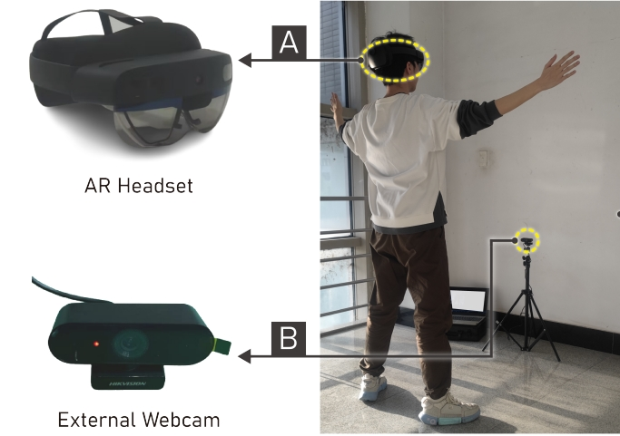 UISTProceedings of the 36th Annual ACM Symposium on User Interface Software and Technology(UIST), 2023.
-
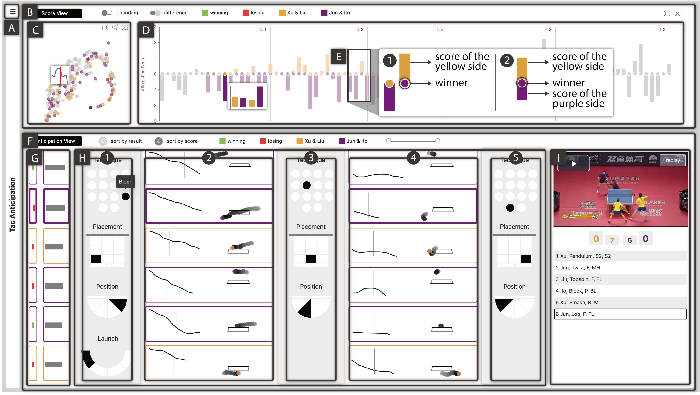 CGFComputer Graphics Forum (EuroVis 2023)(CGF), 2023.
-
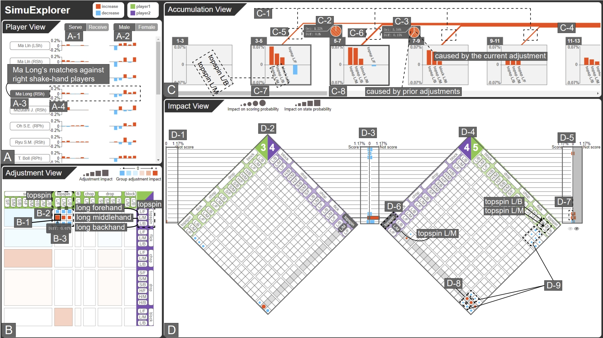 TVCGIEEE Transactions on Visualization and Computer Graphics(TVCG), 2023.
-
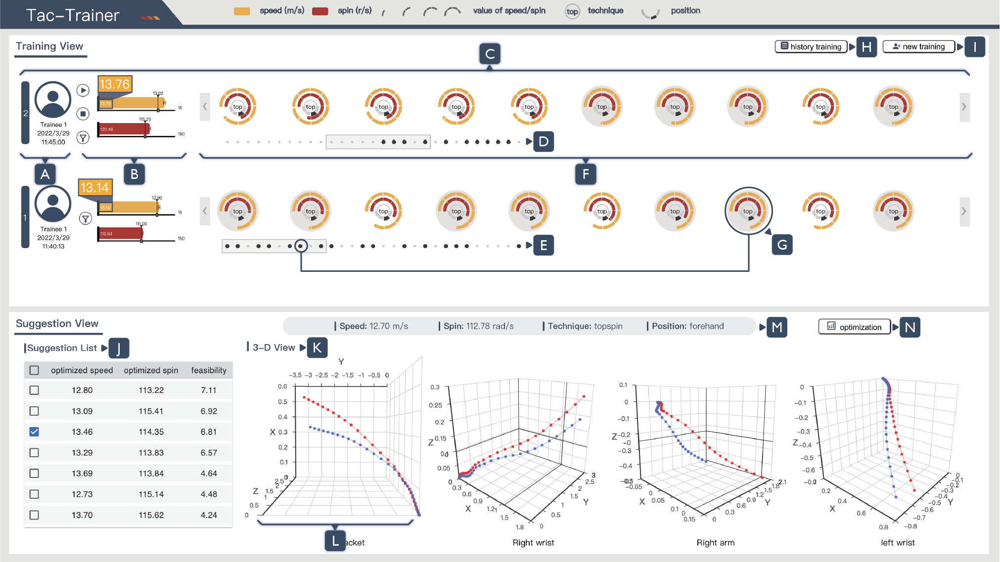 TVCGIEEE Transactions on Visualization and Computer Graphics (IEEE VIS 2022)(TVCG), 2023.
-
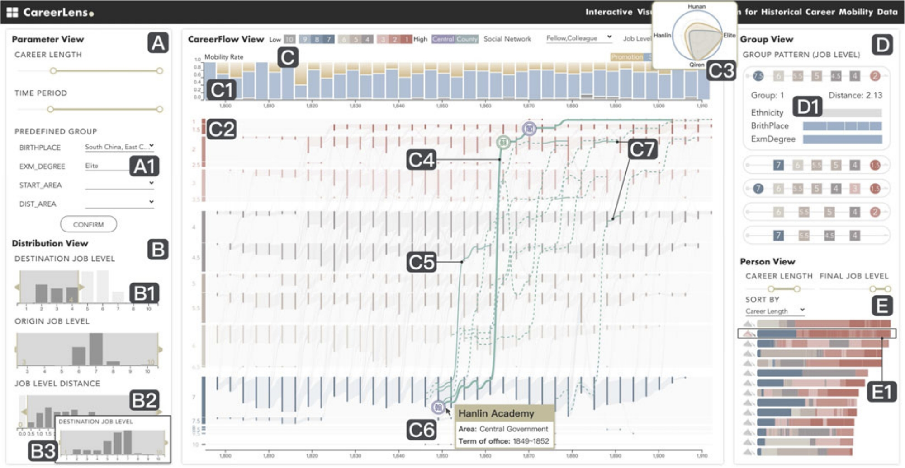 TVCGIEEE Transactions on Visualization and Computer Graphics(TVCG), 2022.
-
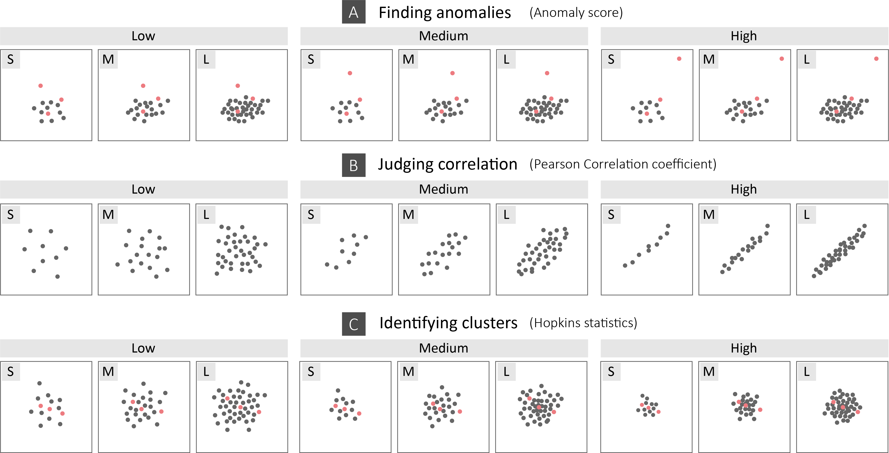 JoVJournal of Visualization (ChinaVis 2021)(JoV), 2021.
-
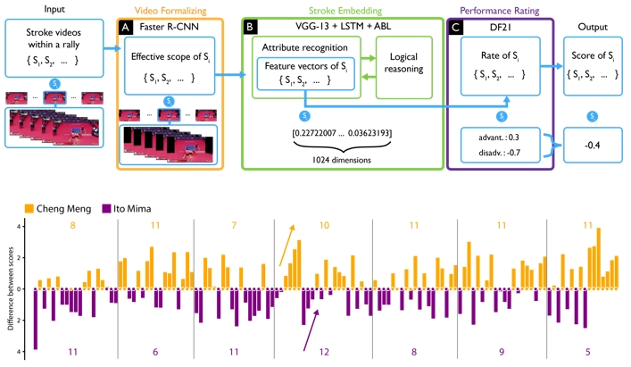 SIGKDDProceedings of the 27th ACM SIGKDD Conference on Knowledge Discovery & Data Mining(SIGKDD), 2021.
-
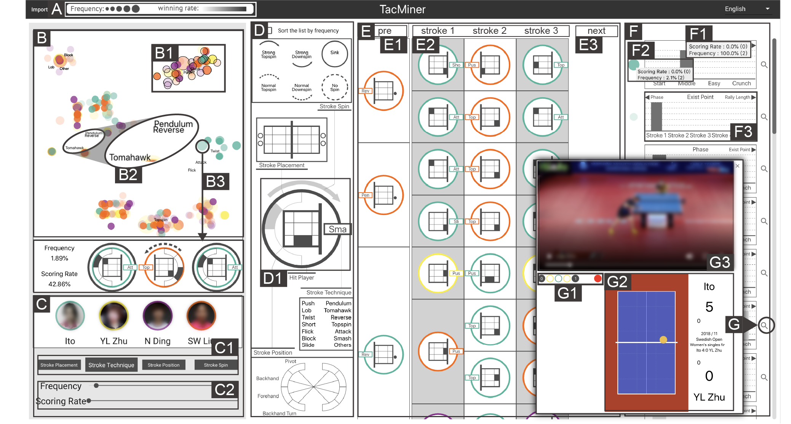 TVCGIEEE Transactions on Visualization and Computer Graphics (IEEE PacificVis 2021)(TVCG), 2021.
-
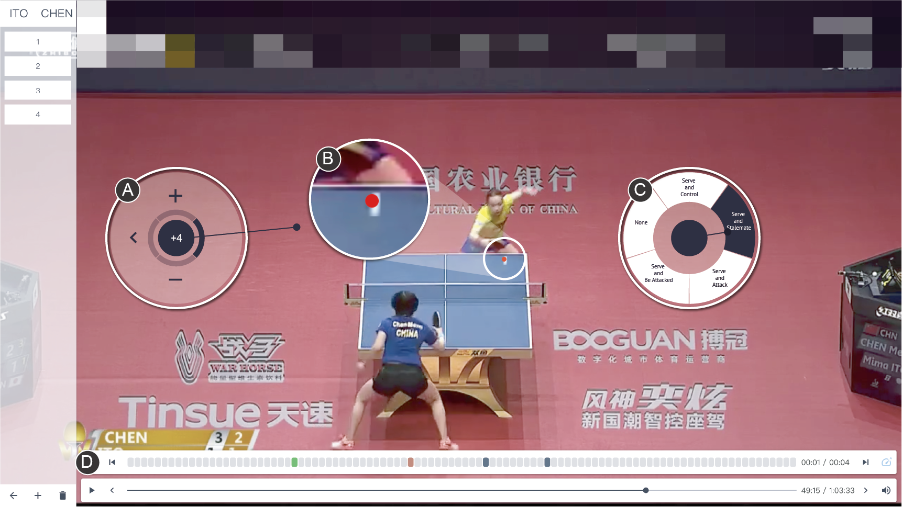 SIGCHIProceedings of the 2021 CHI Conference on Human Factors in Computing Systems(SIGCHI), 2021.
-
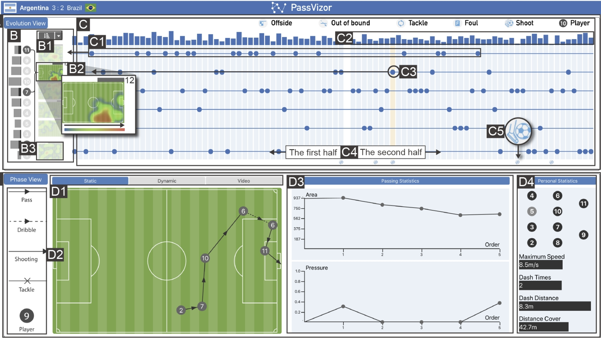 TVCGIEEE Transactions on Visualization and Computer Graphics (IEEE VIS 2020)(TVCG), 2021.
-
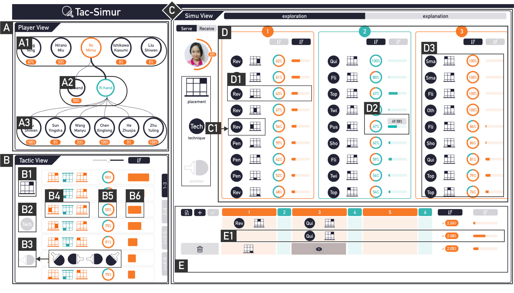 TVCGIEEE Transactions on Visualization and Computer Graphics (IEEE VIS 2019)(TVCG), 2020.
-
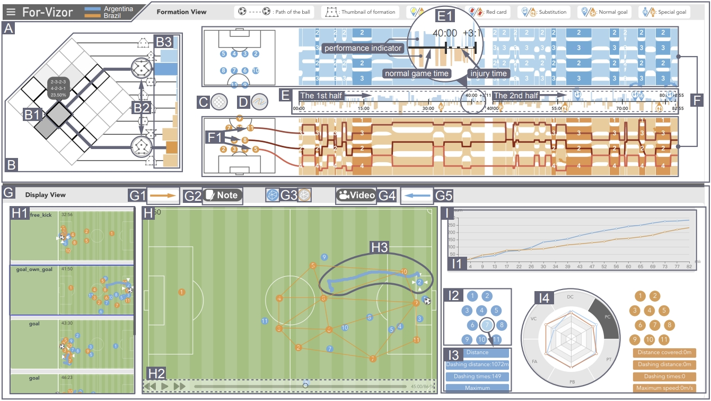 TVCGIEEE Transactions on Visualization and Computer Graphics (IEEE VIS 2018)(TVCG), 2019.
-
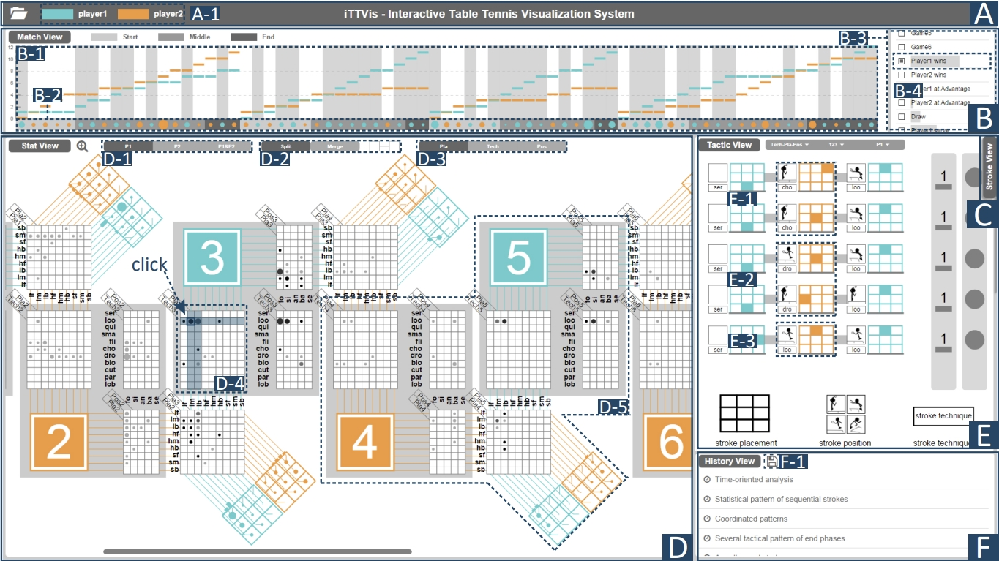 TVCGIEEE Transactions on Visualization and Computer Graphics (IEEE VIS 2017)(TVCG), 2018.
Services
Conference Reviewers
IEEE/CVF Conference on Computer Vision and Pattern Recognition (CVPR) 2021-2023 IEEE/CVF International Conference on Computer Vision (ICCV) 2021 European Conference on Computer Vision (ECCV) 2022
Journal Reviewers
IEEE Transactions on Pattern Analysis and Machine Intelligence (TPAMI) International Journal of Computer Vision (IJCV)
Powered by Jekyll and Minimal Light theme.